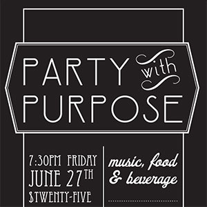
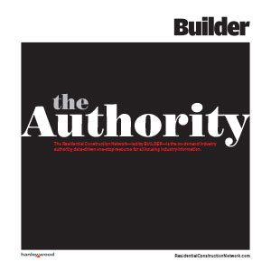
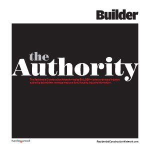

Hi! I'm Megan McCloud.
Graphic Designer / Art Director / World Traveler
Welcome to my portfolio website. I'm a graphic designer with a passion for making communication beautiful, simple and easy. Take a look around. I hope you like what you see. I'm here to help you make your project striking, effective and successful! What can I do for you today?
About Me
I'm am a graphic designer with over 10 years' experience working in studio and in-house environments. I have a Bachelor of Fine Arts degree in Graphic Design from the Savannah College of Art and Design. But my passion for design started well before all of this—in high school. I always knew I wanted to do something "arty" but was never quite sure what.
beginning
In high school, I discovered graphic design and immediately fell in love. I dove in head first and took all of the design classes I could, including a double credit specialty class at a different high school. I also taught myself web design and Flash. I knew that this is what I wanted to do for the rest of my life so I applied to SCAD's Graphic Design program. It was there that I focused on print design and deepened my love of typography and color.
middle
After college I went straight in to a studio environment where I accounted for 25% of the company. I had to wear many hats in addition to being a designer. I directly handled clients, print production, coordinated budgeting and occasionally had to walk the office dog. From there I went to the in-house marketing department of a B2B media company. As a part of a small team, I had to handle all of the company needs and I became incredibly proficient at multitasking and keeping organized. As the Senor Art Director of the team now, I have moved through the ranks and taken on various roles to support the design team. I have experience art directing, project managing, production managing and resource managing. But, at the end of the day, it all comes back down to design. And my love of it has never wavered.
today
I hope to continue designing and making this world a beautiful place to live and read.
Download ResumeProjects
 
